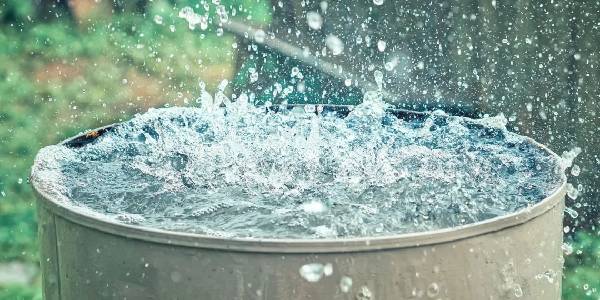

Benefits of Rainwater Harvesting
Rainwater harvesting offers numerous environmental and economic benefits that contribute to a more sustainable and resilient future. Here are some key advantages:
- Reduces Demand on Groundwater: Helps preserve groundwater levels, which are crucial in regions with limited water resources.
- Decreases Water Bills: By using stored rainwater, you can reduce reliance on municipal water, saving on water costs.
- Prevents Soil Erosion and Flooding: Collecting rainwater reduces surface runoff, which can help prevent erosion and reduce the risk of flooding.
- Provides a Backup Water Source: Stored rainwater can serve as an emergency water supply, especially in drought-prone areas.
- Promotes Environmental Sustainability: Utilizing natural resources efficiently reduces the environmental impact of water extraction and treatment.
